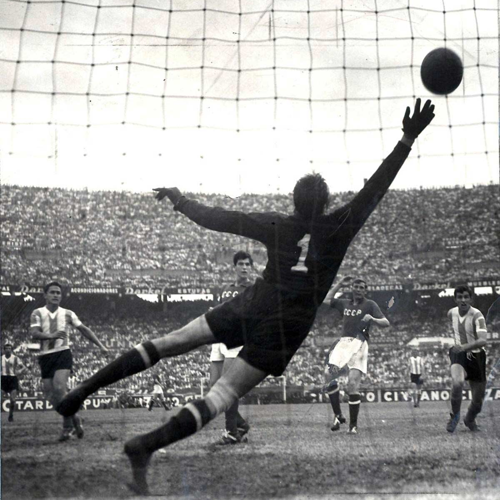
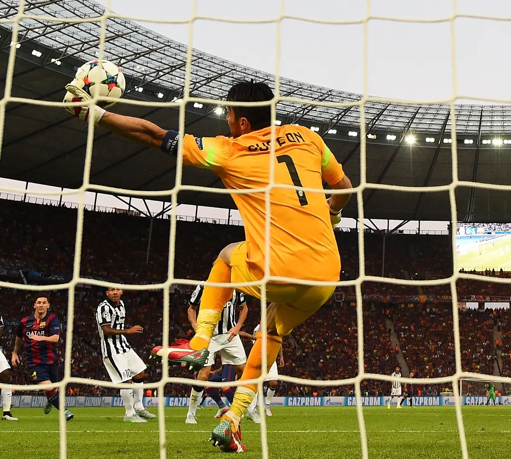
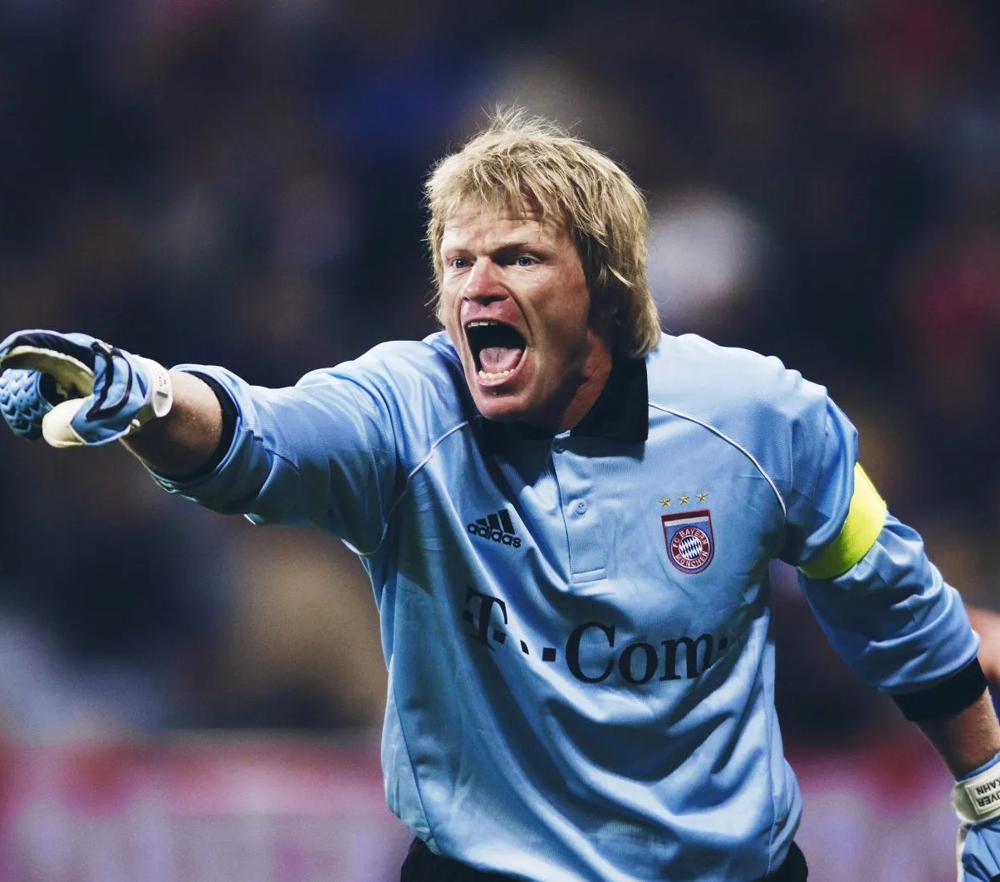

Players who shaped the position
Lev Yashin

Lev Yashin was one of the first keepers to make the goalkeeper position into the head of the entire defense, leading to the creation of the modern goalkeeper position. Before Lev's time in the goal, the goalkeeper stayed on the goal line and was responsible for stopping shots. Lev however was in control of the entire goalbox, directing his defenders on where they need to be, coming off his line to intercept passes or crosses, and even running out to meet attackers head on. These strategies revolutionized the position and are what the modern tactics are based on. Lev played in the Soviet Union for Dynamo Moscow from 1950-1970, and appeared in 3 world cups for the Soviet Union. In 1963, he won the Ballon d'Or (European Player of the Year), and is the only goalkeeper to ever win the award.
Gianluigi "GiGi" Buffon

Buffon is widely considered to be one of the best goalkeepers to ever play the sport, known for having amazing reflexes and shot stopping instincts, durability allowing his career to span into his 40s, and athleticism that gave us spectacular acrobatic saves. Buffon's career took place primarily in Italy's Serie A, where he holds the record for most number of appearances (657 over 24 years), was the first goalkeeper to win the Serie A Footballer of the Year award, and won Serie A Goalkeeper of the Year a record 12 times. He also had a prolific career for Italy's national team, making 176 appearances for their team including 5 World Cups.
Oliver Kahn

Oliver Kahn was another very successful gooalkeeper.